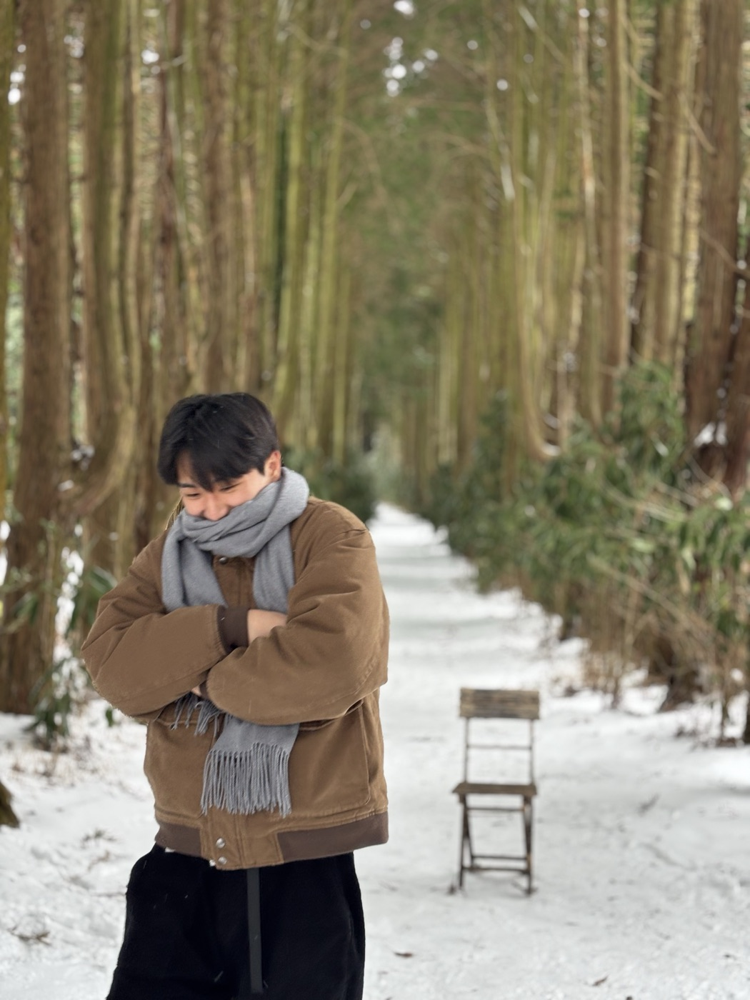

I want to be a generalist in reading data.
Data-driven decision making·R&D strategy roadmapping (patent, finance, ESG)·technology management, forecasting & opportunity discovery·discrete choice experiment·contingent valuation
⚽ Off the clock, I watch football — Incheon United and Arsenal FC.
‡ presenting author